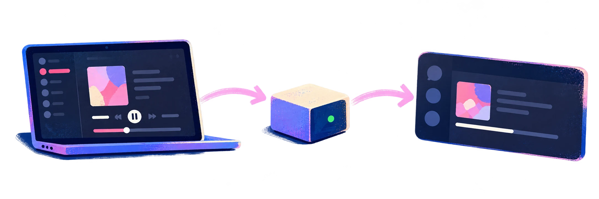

Live track changes
Titles, artists, albums, play state, and seeks update without restarting the app.
Show what you’re listening to on Apple Music in your Discord activity. It runs quietly and locally on your computer.
Free & open source · No Node.js required
Built to stay in sync

Titles, artists, albums, play state, and seeks update without restarting the app.
The elapsed timer stays aligned with the actual player position.
Choose whether to show album details, artwork, playback progress, pause state, and the Apple Music button.
If Discord restarts, the app reconnects and restores your activity automatically.
Native where it counts
A small Swift helper reads Music directly through ScriptingBridge. It does not use JXA, Deno, or an intermediary server.
Uses the Windows system media session exposed by Apple Music and connects to Discord through native named pipes.
Three-minute setup
Choose macOS or Windows. The runtime is already included.
Paste the public Discord Application ID once. No token or secret is used.
Keep Apple Music and desktop Discord open. Use the included Settings launcher any time you want to change the display.
Your listening stays yours. Track details go only to Discord and, when artwork is enabled, Apple's public catalog search. There are no analytics or relay servers.